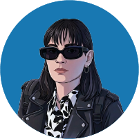

Formación Educativa
LICENCIATURA EN DISEÑO Y COMUNICACIÓN VISUAL
Universidad Nacional de Lanús Próxima a obtener la licenciatura, Formación versátil y abarcativa. Desde Julio de 2019 - Actualidad
MAQUINISTA IMPRESORA EN OFFSET
Fundación Gutenberg Formación técnica en todas las etapas del sistema de impresión. Curso finalizado en Agosto de 2016
FORMACIÓN ADICIONAL
- Motion Graphics - Coderhouse
- Gestión de Transporte/ Logística - UTN
- Idiomas: Ingles intermedio
Experiencia Laboral
DISEÑADORA GRÁFICA (Jul 25- May 24)
Diseño de estampados, afiches, avíos, ambientación y elementos de identidad visual. Coordinación con estamperías para asegurar la correcta aplicación de diseños y supervisión de bordados y estampados. Diseño para plataformas digitales reforzando la identidad de marca y comunicación visual. Empresa: Quinoto Indumentaria / Contacto: +54 9 11 3377-1457 (David Kim)
MANAGEMENT (Ag 18 - Dic 21)
Liderazgo en iniciativas de fundraising, desarrollando estrategias efectivas para recaudación de fondos. Empresa: Q.R.S Business Solutions / Contacto: +54 9 11 3081-0322 (Lucrecia Amarilla)
ENCARGADA DE LOGÍSTICA (Ene 22 - Feb 26)
Desarrollo de instructivos de armado, etiquetas para despacho y catálogos comerciales. Gestión de fotografía de producto, apoyo en la logística y preimpresión de materiales. Diseño de exhibidores, material para puntos de venta, packaging y stands portátiles. Empresa: Smart Comunicación Visual S.A. / Contacto: +54 9 11 5029-3918 (Silvina Furcade)

Sobre Mí
Tengo habilidades en logística, liderazgo y ventas para gestionar proyectos de manera integral